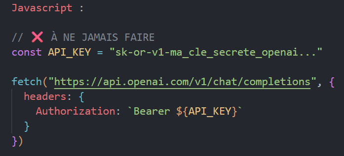
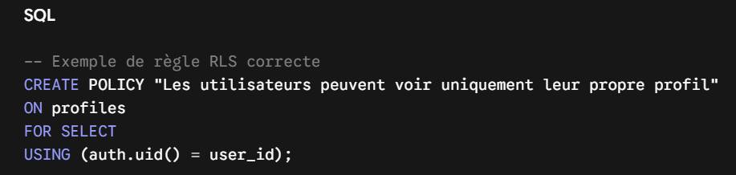

Sécurité Lovable + Supabase : les erreurs les plus fréquentes (et comment les éviter)
Sommaire :
- Exposer ses clés API
- Oublier de protéger ses routes
- Ne pas limiter les requêtes (Rate Limiting)
- Mal configurer le RLS sur Supabase
- Ne jamais tester la sécurité de son app
- Bonus : OAuth ou API Keys ?
- Checklist de sécurité
- Conclusion
Créer vite, c’est bien. Créer sécurisé, c’est mieux.
Aujourd’hui, avec des outils comme Lovable et Supabase, on peut créer une application full-stack à la vitesse de la lumière. En quelques heures, on met en place une interface propre, une base de données, une authentification complète et des fonctionnalités IA avancées. Le problème ? Beaucoup de ces projets foncent en production avec des failles de sécurité élémentaires.
Et souvent :
- Ce ne sont pas des "hackers ultra-avancés" qui trouvent la brèche.
- Ce sont juste des endpoints mal protégés, des clés privées visibles ou des permissions oubliées.
Un exemple réel rencontré pendant un audit
Récemment, j’ai audité un SaaS développé avec Lovable et Supabase. En ouvrant simplement les outils de développement du navigateur (F12), j’ai rapidement vu des requêtes accessibles publiquement et une clé API sensible exposée.
Avec Postman, il m'a suffi de quelques minutes pour reproduire les requêtes, accéder à des données privées et modifier des ressources sans aucune autorisation.
Le plus important à comprendre : Je n’ai pas "hacké" le site. J’ai simplement utilisé des informations que l'application fournissait d'elle-même au navigateur. Et c’est exactement ce qu’un attaquant ferait.
Les 5 signes qu’une app Lovable est vulnérable :
- ✔️ Clé API privée visible dans l'onglet Network.
- ✔️ Aucune limitation du nombre de requêtes (Rate Limiting).
- ✔️ Endpoints ou tables accessibles sans authentification.
- ✔️ RLS (Row Level Security) absent ou mal configuré.
- ✔️ Logique de sécurité codée uniquement côté frontend.
1. Exposer ses clés API
C’est quoi une clé API ?
C'est un jeton (ou mot de passe) qui permet à ton application de s'authentifier auprès d'un service externe : OpenAI, Stripe, GitHub, etc.
Le problème
Beaucoup de développeurs débutants laissent traîner leurs clés secrètes dans le code frontend généré par Lovable.
- expliquer simplement ce qui se passe
- guider vers d’autres pages (accueil, services, contact…)
- garder le ton du site
- ajouter une touche humaine (et pourquoi pas un peu d’humour)

Le souci :
Tout ce qui est exécuté dans le frontend est accessible à l'utilisateur. N'importe qui peut ouvrir l'onglet Network de son navigateur, intercepter la clé et vider ton quota OpenAI ou Stripe en quelques heures, générant des factures de plusieurs centaines d'euros.
💡 La nuance indispensable avec Supabase
Supabase te fournit deux types de clés :
- 1. La clé anon (publique) : Elle doit être dans ton frontend. Elle permet au navigateur de communiquer avec Supabase. Elle n'est pas dangereuse à condition que ton RLS soit activé.
- 2. La clé service_role (secrète) : C'est la clé admin qui bypass toutes les sécurités. Elle ne doit jamais être injectée dans Lovable ou ton frontend.
❌ MAUVAISE PRATIQUE :
Frontend (Navigateur) ──[ Clé OpenAI ou service_role Visible ! ]──> API Externe
============================================================
✅ BONNE PRATIQUE :
Frontend (Navigateur) ──> Supabase Edge Function ──[ Clé Cachée au Serveur ]──> API Externe
2. Oublier de protéger ses routes
Une erreur de logique très fréquente
Beaucoup de développeurs se disent : "Le bouton 'Supprimer un utilisateur' est masqué dans l'interface si l'utilisateur n'est pas admin, donc mon application est sécurisée."
C'est faux. Le frontend n'est qu'une illusion visuelle. Même si le bouton est caché, la route API ou l'endpoint qui exécute l'action existe toujours. Un utilisateur malveillant peut intercepter l'URL et envoyer une requête POST ou DELETE directement via Postman.
La règle d'or
Le frontend ne protège rien. Toutes les vérifications critiques (vérifier si l’utilisateur est connecté, valider son rôle, vérifier ses permissions) doivent être impérativement exécutées et validées côté serveur.
3. Ne pas limiter les requêtes (Rate Limiting)
Si ta route /api/generate-text fonctionne parfaitement, que se passe-t-il si un utilisateur lance un script qui l'appelle 10 000 fois en une minute ?
Sans Rate Limiting (limitation du nombre de requêtes), ton application subira :
- Des coûts d'infrastructure ou d'API (OpenAI) gigantesques.
- Un ralentissement général du serveur (DDOS).
Comment éviter ça ?
La solution reine avec l'écosystème Lovable + Supabase est d'intercepter les requêtes au niveau des Supabase Edge Functions en y intégrant un middleware de limitation (comme Upstash Rate Limit ou une configuration adaptée sur ton API Gateway) pour restreindre les requêtes par adresse IP ou par utilisateur connecté.
Le frontend ne protège rien. Toutes les vérifications critiques (vérifier si l’utilisateur est connecté, valider son rôle, vérifier ses permissions) doivent être impérativement exécutées et validées côté serveur.
4. Mal configurer le RLS sur Supabase
Le principe du RLS (Row Level Security)
Le RLS te permet de définir des règles d'accès précises directement au niveau de tes tables SQL : qui a le droit de lire, d'insérer ou de modifier quelle ligne.

Le piège classique : Oublier des verbes SQL
Activer le RLS, c'est bien. Mais beaucoup de développeurs créent une règle pour le SELECT, puis oublient de configurer le UPDATE ou le DELETE.
Deux scénarios dangereux se produisent alors :
- Le mode restrictif par défaut : Supabase bloque tout le reste. Ton application plante dès qu'un utilisateur veut modifier son profil.
- Le RLS mal appliqué (oublié sur une table) : La table reste totalement ouverte, et n'importe qui possédant ta clé publique anon peut vider ou modifier la base de données.
💡Bon réflexe :
Vérifie systématiquement tes politiques RLS pour chaque verbe SQL (SELECT, INSERT, UPDATE, DELETE).
5. Ne jamais tester la sécurité de son app
Pas besoin d'être un expert en cybersécurité pour valider les bases. Tu peux détecter 80% des failles en 10 minutes grâce à ces trois étapes :
- Inspecter l'onglet Network (DevTools) : Ouvre ton application, fais un clic droit -> Inspecter -> onglet Network. Regarde les requêtes. Est-ce que tu vois des clés privées passer ? Des tokens administratifs ?
- Analyser les réponses JSON : Ton API renvoie-t-elle trop d'informations ? Si tu demandes le profil public d'un membre, est-ce que le JSON contient aussi son email, son rôle ou des données d'audit internes ?
- Le test Postman : Prends l'URL d'une action sensible. Essaie de l'appeler sans être connecté, ou avec le compte d'un autre utilisateur test. Si la requête passe, tu as une faille.
Bonus : OAuth ou API Keys ?
Si ton application doit interagir avec les données de tes utilisateurs sur d'autres plateformes (Google, GitHub, Discord) :
- Préfère l'OAuth (via Supabase Auth) : C'est ultra-sécurisé, temporaire et l'utilisateur ne te confie jamais son mot de passe.
- Évite de stocker des clés API brutes de tes utilisateurs dans tes tables, à moins qu'elles ne soient lourdement chiffrées côté base de données.
Checklist de sécurité
Avant de lancer ton app en production, passe en revue cette checklist :
- 🔒 Aucune clé secrète dans le frontend.
- 🔒 Aucune clé API tierce (OpenAI, Stripe...) n'est écrite en dur dans le code React/Vite.
- 🔒 Le RLS est activé sur toutes les tables de la base de données.
- 🔒 Chaque table possède des règles explicites pour le SELECT, INSERT, UPDATE et DELETE.
- 🔒 Le Rate Limiting est actif sur les endpoints critiques.
- 🔒 Les réponses JSON de la base de données ne contiennent aucun champ sensible inutile.
Conclusion
Les outils d'IA et de No-code/Low-code comme Lovable permettent de livrer des produits incroyables en un temps record. Cependant, l'IA génère le code que tu lui demandes : elle ne peut pas deviner tes règles métier critiques ni l'intention de ton modèle d'affaires. La sécurité finale reste ta responsabilité.
Prendre 10 minutes pour auditer son architecture avant le lancement peut t'éviter des milliers d'euros de pertes et protéger tes utilisateurs.